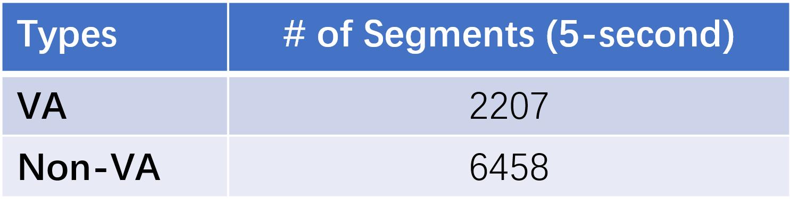

1 Introduction
Ventricular fibrillation (VF) and ventricular tachycardia (VT) are two types of life-threatening ventricular arrhythmias (VAs), which are the main cause of Sudden Cardiac Death (SCD). More than 60% of deaths from cardiovascular disease are from out-of-hospital SCD [1]. It is caused by a malfunction in the heart's electrical system that can occur when the lower chambers of the heart suddenly start beating in an uncoordinated fashion, preventing the heart from pumping blood out to the lungs and body [1]. Unless the heart is shocked back into normal rhythm, the patient rarely survives.
People at high risk of SCD rely on the Implantable Cardioverter Defibrillator (ICD) to deliver proper and in-time defibrillation treatment when experiencing life-threatening VAs. ICD is a small device implanted typically under the skin in the left upper chest and is programmed to release defibrillation (i.e., electrical shock) therapy on VT and VF to restore rhythm back to normal. The early and in-time diagnosis and treatment of life-threatening VAs can increase the chances of survival. However, current detection methods deployed on ICDs count on a wide variety of criteria obtained from clinical trials, and there are hundreds of programmable criteria parameters affecting the defibrillation delivery decision [2, 3].
Automatic detection with less expertise involved in ICDs can further improve the detection performances and reduce the workload from physicians in criteria design and parameters adjustment [5-7]. This year’s Challenge is asking you to build a deep learning algorithm that can classify life-threatening VAs with only the labeled one-channel intracardiac electrograms (IEGMs) sensed by single-chamber ICDs while satisfying the requirements of in-time detection on the resource-constrained microcontroller (MCU) platform. We will test each algorithm on databases of IEGMs in terms of detection performances as well as practical performances, and the comprehensive performances will reveal the utility of the algorithm on life-threatening VAs detection in ICDs.
2 Objective
The goal of the 2022 Challenge is to discriminate life-threatening VAs (i.e., Ventricular Fibrillation and Ventricular Tachycardia) from single-lead (RVA-Bi) IEGM recordings.
We ask participants to design and implement a working, open-source deep learning algorithm that can automatically discriminate life-threatening VAs (i.e., binary classification: VAs or non-VAs) from IEGM recordings while being able to be deployed and run on the given MCU platform. We will award prizes to the teams with top comprehensive performances in terms of detection precision, memory occupation, and inference latency.
3 Data
The data contains single-lead IEGMs recordings retrieved from the lead RVA-Bi. Each recording is 5-second in length with 250 Hz sampling rate. The recordings are pre-processed by applying a band-pass filter with a frequency of a pass-band frequency of 15 Hz and a stop-band frequency of 55 Hz. Each IEGM recording has one label that describes the cardiac abnormalities (or normal sinus rhythm). We have provided the lists of labels for reference.
The IEGM recordings are partitioned patient-wisely in the training and testing set. 80% of the subjects’ IEGM recordings are released as training material. The rest 20% of the subjects’ IEGM recordings would be utilized to evaluate the detection performances of the submitted deep learning algorithm.
Our dataset is retrieved from volumes I & II of Ann Arbor Electrogram Libraries (AAEL), which is one of the largest datasets for IEGMs and is used by all manufacturers developing implantable defibrillators to test their methods [4]. The original sampling rate of all recordings is 1,000 Hz. Different periods of recordings have been annotated and reviewed by cardiac electrophysiologists to ensure an accurate interpretation of arrhythmia.

|

|
4 MCU Platform and Cube.AI
The development board required in the Challenge is NUCLEO-L432KC, which is with ARM Cortex-M4 core at 80 MHz, 258 Kbytes of flash memory, 64 Kbytes of SRAM, and embedded ST-LINK/V2-1 debugger/programmer. The development board also supports STM32 X-Cube-AI, which is the an STM32Cube Expansion Package part of the STM32Cube.AI ecosystem and extending STM32CubeMX capabilities with automatic conversion of pre-trained Artificial Intelligence algorithms, including Neural Network and classical Machine Learning models, and integration of generated optimized library into the user's project. The practical performances of the deep learning algorithm would be deployed and evaluated on the development board with the help of X-Cube-AI.
5 Scoring
We will evaluate the submitted algorithm with the scoring metric that evaluates the comprehensive performances in terms of detection performances and practical performances. It is defined as follows:
For detection performances, we first compute the confusion matric of the classification made by the submitted algorithm. The case positive is VAs. We then calculate the F_β score with follow equation(β =2):
The setting gives more importance to recall since the detection rate on life-threatening VAs is the most important metric in ICDs. It is expected to discrminate as many VAs recordings as possible to avoid miss-detected VAs which could result in sudden cardiac death.
For practical performances,
- Inference latency: A penalty P=? to the final score would be added if the inference latency on a 5-second IEGM recording is longer than 30ms.
- Memory occupation: Two types of memory occupation would be calculated, that is,
1) the peak work-in memory occupation M_w ;
2) the flash occupation M_f related to model size and program size. M_w would be normalized by (1 - (M_w-Min_w)/(Max_w-Min_w)) and Mf would be normalized by (1 - (M_f-Min_f)(Max_f-Min_f)).
The final score would be calculated as follows:

6 References
[1] Adabag, A.S., Luepker, R.V., Roger, V.L. and Gersh, B.J., 2010. Sudden cardiac death: epidemiology and risk factors. Nature Reviews Cardiology, 7(4), pp.216-225.
[2] Zanker, N., Schuster, D., Gilkerson, J. and Stein, K., 2016. Tachycardia detection in ICDs by Boston Scientific. Herzschrittmachertherapie+ Elektrophysiologie, 27(3), pp.186-192.
[3] Madhavan, M. and Friedman, P.A., 2013. Optimal programming of implantable cardiac-defibrillators. Circulation, 128(6), pp.659-672.
[4] AnnArbor. Ann Arbor Electrogram Libraries, Chicago IL, USA, 2003.
[5] Jia, Z., Wang, Z., Hong, F., Ping, L., Shi, Y. and Hu, J., Learning to Learn Personalized Neural Network for Ventricular Arrhythmias Detection on Intracardiac EGMs. International Joint Conferences on Artificial Intelligence Organization (IJCAI-21), pp. 2606-2613.
[6] Acharya, U. Rajendra, et al. "Automated identification of shockable and non-shockable life-threatening ventricular arrhythmias using convolutional neural network." Future Generation Computer Systems 79 (2018): 952-959.
[7] Hannun, Awni Y., et al. "Cardiologist-level arrhythmia detection and classification in ambulatory electrocardiograms using a deep neural network." Nature medicine 25.1 (2019): 65-69.